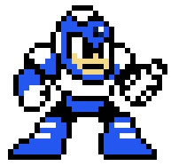
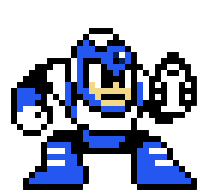

To defeat Quick Man in Mega Man 2, follow these strategies!
Exploit the Metal Blade:
This weapon is your primary weapon against Flash Man. Its range and rapid-fire capabilities allow you to consistently damage him.
Patience is Key:
Flash Man teleports around the room and uses his Time Stopper ability. Avoid wasting shots during his invulnerable teleport animation.
Conserve Weapon Energy:
While the Metal Blade has ample energy, be mindful of usage throughout the stage.
Dodging is Crucial:
When Flash Man activates Time Stopper, his movements are predictable. Use this opportunity to position yourself strategically to avoid his attacks. By following these strategies, players can effectively defeat Flash Man and move on to the next challenge in the game.
Avoid Laser Beams:
Fall down the left chute to avoid the laser beams and pick up the extra life and E-Tank.
Time Stopper:
Use the Time Stopper weapon to freeze Quick Man, but save it for the end of the stage to avoid running out of energy.